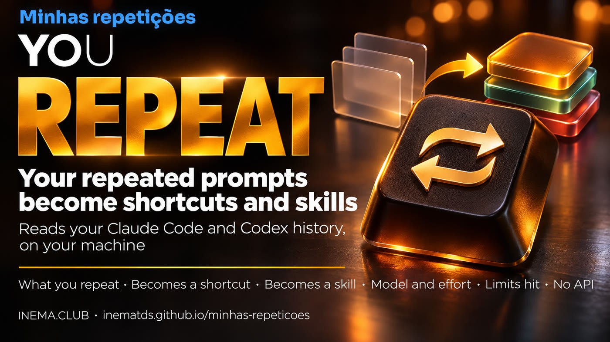

Each repeated request feels like the first, so you don't notice and pay again in time and usage limits. Find out what becomes a shortcut, what becomes a skill (a step-by-step process the AI follows on its own), and what shouldn't need to be requested at all.

People who work with AI agents ask for the same things many times and don't notice, because each time feels like the first. Minhas repetições is a free kit that reads the Claude Code and Codex history stored on your computer and shows what you repeat most. For each repetition, it tells you whether it’s worth turning into a shortcut (a short text you paste with a trigger), a skill (a step-by-step procedure the agent follows), or whether it’s just a response like "yes." To use it, all you need is Python 3: it doesn’t call an API, and nothing leaves your machine.
We ran the kit on an ARCKHÉ production machine, where AI agents create videos, guides, and publications every day (30 days through 15/11/2026). Counts only: no text leaves the computer. A "turn" is each time the AI works in a round.
requests typed by one person in a month
of them were repetitions (the same request 3 or more times)
"what's the status": the champion. Adding "what's running" and similar, 80 checks
turns handled by bots (agents that run on their own, without anyone typing): almost 6 for every typed request
Opus 5.5 and Fable 5.2 are two Claude models: Opus is the faster one, and Fable is the larger one (thinks more, uses more). Codex is OpenAI's agent.
The “effort” (how much the model thinks before acting) was set to medium for almost all requests that record effort. The subscription reached its usage limit 6 times in Claude and 10 times in Codex. 10% of Opus 5.5 runs took more than 10 minutes.
The kit sorts each group of repeated requests into these four types (plus two supporting types: pasted link and command you already use). The difference lies in the length, the steps, and what the request is asking for (how to use ↓).
A short, consistent request, like "publish on the portal." You type a short trigger (the kit suggests ;portal-publica) and the text appears. The kit provides the ready-made list.
Long request with steps ("create the repo, run the tests, make the guide, publish"). It becomes a procedure the agent follows the same way every time. The kit provides the draft.
“yes,” “continue,” “go ahead.” No shortcut needed. If it comes up too often, the agent is asking too much.
"what's the status?" repeated 68 times doesn't call for a shortcut: it calls for a notice at the end, a status bar, or a dashboard. The kit flags these groups and doesn't generate shortcuts for them.
All 12 tips are in the kit (DICAS.md). The ones that make the biggest difference day to day:
Start with the larger model (Fable on Claude) when you don't know the way yet. Once the plan is clear, switch to the faster one (Opus) and execute.
If the model thinks too much for the task, adjust the effort level (a setting for how much it thinks), not a phrase in the request.
A medium or large change goes to another agent for review, preferably from a different company (Codex reviewing what Claude did, for example).
A script checks first; AI only steps in when it finds a problem. A run with no problems costs nothing.
A written completion criterion and “Done: …” at the end take “where are we at?” out of your day.
The number that matters is how much your repetition drops after using shortcuts and skills.
From here down is the technical part: install, run, and read the report. You doesn’t need this section to understand what’s above.
repeticoes.py reads the logs Claude Code and Codex already store on your computer and writes a report.
Python’s standard library. It doesn’t call APIs, install anything, or send anything outside.
Bots, watchdogs, notifications, and subagents are excluded from the count (and shown separately). Resumed sessions aren’t counted twice.
“what sitaution” and “where are we at?” fall into the same group; “publish,” “publish,” and “published” do too.
Each step takes seconds; 11 thousand sessions took about 1 minute.
Nothing beyond that.
It’s already included in Linux. On Mac, it may ask you to install the command-line tools; on Windows, use py instead of python3.
python3 --versionIt's on ~/.claude/projects e ~/.codex/sessions. You only need to have used it.
ls ~/.claude/projects | headFree text expander for using the generated shortcuts. Any other one works too.
# espanso.orgReal commands from the kit.
One public repository, one main file.
git clone https://github.com/linnoff88-dev/minhas-repeticoes cd minhas-repeticoes
15 tests with an invented history (none of your data).
python3 -m unittest discover -s testes # Ran 15 tests ... OK
Default: last 30 days, default Claude Code and Codex folders.
python3 repeticoes.py # 2287 of your requests · 12.6% repeated · 6 shortcuts · 3 skills · 73s → relatorio/relatorio.html python3 repeticoes.py --dias 7 --saida semana # another window python3 repeticoes.py --sem-codex # Claude Code only
Charts for repetition, groups, model, effort, limits, and long turns. Opens in your browser, no internet required.
xdg-open relatorio/relatorio.html # on Mac: open
Each repeated short request becomes a trigger (checks are left out). Review it before copying. On Mac, the folder is ~/Library/Application Support/espanso/match/.
cat relatorio/atalhos-espanso.yml cp relatorio/atalhos-espanso.yml ~/.config/espanso/match/repeticoes.yml
Each draft includes 3 examples of how you made the request. Write down the steps, turn what changes into an argument, and move it into your skills. Or install the kit’s skill and ask the agent to do it with you.
ls relatorio/skills-rascunho/ mkdir -p ~/.claude/skills cp -r skill/minhas-repeticoes ~/.claude/skills/ cp repeticoes.py DICAS.md ~/.claude/skills/minhas-repeticoes/ # later, in the agent: "what do I repeat?"
Compare the two numeros.json: it’s the only file with none of your text.
python3 repeticoes.py --saida relatorio-mes2
With the invented history from the tests (exemplos/relatorio-inventado/). The report is in Portuguese. Just numeros.json can be shown to someone; the rest contains excerpts from your requests.
1. 5× checagem — qual situacao 2. 4× atalho — publica no portal 3. 3× resposta — sim 4. 3× ja-e-atalho — /prime 5. 3× skill — crie o repo deste conteúdo, escreva o README..., publique no portal
matches: - trigger: ";portal-publica" replace: "publica no portal"
What exists today and what may come next.